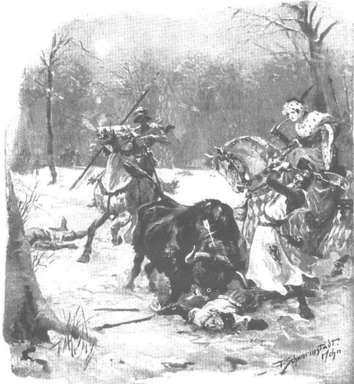

Dưới sự hướng dẫn của viên trưởng phường săn, những người thợ săn thành thạo bắt đầu bố trí tất cả những người đi săn thành một hàng dài dọc theo rìa trảng trống, để từ chỗ nấp kín họ có cả một khoảng không gian trống trải trước mặt, thuận tiện cho những phát tên bắn ra từ cung nỏ. Hai phía sườn ngắn hơn của trảng trống được quây lưới, phía sau có những người “đuổi thú” nấp sẵn, nhiệm vụ của họ là đuổi cho thú chạy trở lại trước làn tên của những người săn, hoặc nếu như không đuổi được thì dùng lao đâm chết những con thú đã sa lưới. Những đám người Kurpie đông không kể xiết, được bố trí một cách khéo léo tạo thành vòng vây, có nhiệm vụ dồn đuổi tất cả các loài thú từ trong rừng sâu ra trảng trống. Sau lưng các tay thợ săn còn có thêm một lượt lưới chăng sẵn, để phòng trường hợp con thú vượt được qua hàng người cầm cung nỏ thì sẽ phải sa vào lưới và bị giết chết.
Quận công đứng ngay chính giữa hàng người, trong một cái rãnh nông chạy qua suốt bề rộng trảng trống. Quan trưởng phường săn, ông Mrokota xứ Mocarzewo, đã chọn cho ngài vị trí ấy, bởi ông biết rằng loài thú lớn nhất rừng khi tránh vòng vây dồn đuổi sẽ chạy theo chính cái lõng này. Quận công cầm một chiếc nỏ trong tay, ngay cạnh ngài, dựa vào thân cây là một ngọn đòng nặng trịch, còn hơi lùi về phía sau một chút là hai trợ thủ mang rìu trên vai, lực lưỡng, to như thân cây rừng, ngoài lưỡi rìu họ còn cầm thêm những chiếc nỏ đã giương sẵn tên để đưa cho quận công khi ngài cần đến. Quận chúa và tiểu thư Jurandówna không xuống ngựa, bởi quận công không cho phép, đề phòng mối nguy hiểm do lũ bò tót và bò rừng - khi gặp những loài thú này, trong trường hợp nguy hiểm thì chạy trốn bằng ngựa an toàn hơn chạy bộ. Hiệp sĩ de Lorche mặc dù được quận công mời vào vị trí ngay bên phải ngài, nhưng vì đã xin ngài cho phép được cưỡi ngựa để bảo vệ quận chúa và tiểu thư, nên chàng đứng gần quận chúa, nom hệt như chiếc đỉnh dài ngoẳng với ngọn giáo hiệp sĩ trong tay, thứ vũ khí mà dám dân Mazury thường sẽ chế nhạo với nhau là ít hợp với chuyện săn bắn.
Còn Zbyszko thì cắm ngọn lao xuống tuyết, xoay cánh nỏ ra sau lưng, đứng bên cạnh ngựa Danusia, ngước mắt lên nhìn nàng, thì thầm với nàng, chốc chốc lại ôm chân nàng và hôn vào đầu gối nàng, bởi chàng hoàn toàn không còn giấu giếm tình yêu của mình trước mặt mọi người nữa. Chàng chỉ im lặng khi ông Mrokota xứ Mocarzewo dữ tợn - người mà ở trong rừng có thể dám quát cả quận công - buộc chàng phải im.
Lúc ấy, từ phía xa xa trong rừng thẳm chợt vang lên tiếng tù và của dân Kurpie, từ trảng trống vang lên tiếng kèn sừng cong ồn ã và cụt lủn đáp lại, rồi sau đó im lặng hoàn toàn bao trùm. Chỉ thỉnh thoảng có tiếng chim giẻ cùi chí chóe trong ngọn thông, hoặc tiếng những người đang vây dồn kêu lên quà quà như tiếng quạ. Những người đi săn căng mắt chăm chăm nhìn vào khoảng không gian trống trải màu trắng, nơi gió đang khẽ lay động lớp lau lách tuyết phủ và những bụi thùy liễu không còn lá, ai cũng nóng lòng đợi con thú đầu tiên xuất hiện trên mặt tuyết trắng, ai cũng thầm đoán mình sẽ săn được những con thú vừa tuyệt diệu vừa dư dật, bởi khu rừng này đầy những bò tót, bò rừng và lợn rừng. Những người thợ rừng Kurpie cũng xua cả mấy bác gấu đang ngủ đông trong hang, và khi bị đánh thức bất chợt như thế, các bác gấu ta bò trườn trong đám bụi rậm, cáu kỉnh, đói bụng và nghi kỵ, đoán rằng chỉ chốc nữa đây chúng sẽ phải đánh nhau, không chỉ để bảo vệ giấc ngủ đông bình lặng mà còn nhằm bảo vệ chính mạng sống của mình.
Nhưng phải chờ đợi khá lâu, bởi những người đang dồn đuổi thú rừng về phía trảng trống đã dàn ra chiếm cả một khoảnh rừng rất lớn, bắt đầu đi từ chỗ xa đến nỗi những người đi săn thậm chí không nghe thấy tiếng chó sủa, lũ chó mà ngay sau lúc tiếng tù và vang lên liền được thả khỏi đây. Một con trong bọn, có lẽ được thả ra quá sớm hoặc được tự do lẩn quẩn sau lưng đám nông dân, chợt xuất hiện chạy dọc theo trảng trống, mũi chúi xuống đất, lao vụt qua giữa những người đang mai phục chờ đợi. Để rồi tất cả lại trống trơn và im lặng, chỉ còn nghe tiếng những người vây dồn kêu ‘quà quà’ hoài như tiếng quạ, báo hiệu chẳng mấy chốc nữa công việc sẽ bắt đầu.
Quả thực, sau khoảng thời gian đọc hết vài bài kinh, ở mép trảng trống hiện ra mấy con sói, những con thú tinh khôn nhất đang cố tìm ra cách thoát khỏi vòng vây. Chúng có tới mấy con. Nhưng khi vừa lao ra trảng trống, đánh hơi thấy có người ở chung quanh, chúng lại lặn ngay vào rừng trở lại, hẳn để tìm lối thoát khác. Tiếp đó lũ lợn rừng từ rừng rậm nhô ra, chạy lúp xúp thành một hàng dài như sợi đây xích màu đen qua khoảng không gian phủ tuyết, nom từ xa trông giống lũ lợn nhà vì nghe tiếng gọi của nữ gia chủ mà đang dỏng tai chạy về trang ấp. Nhưng sợi dây xích ấy chợt sững lại, nghe ngóng, đánh hơi, quay trở lại, rồi lại nghe ngóng, ngoặt sang phía lưới, để rồi nhận thấy sự có mặt của đám người đuổi ngược, chúng vừa hộc lên vừa quay trở lại phía những người đi săn, tiến mỗi lúc một thận trọng, mỗi lúc một đến gần hơn, cho đến khi nghe thấy tiếng lẫy nỏ bật đánh tách, những mũi tên xé gió lao đi và dòng máu đầu tiên lan thành vết sậm đỏ trên tấm đệm tuyết trắng ngần.
Lúc ấy, tiếng kêu hò vang lên, đàn lợn rừng kinh hoàng như thể bị sét đánh trúng, một số con chạy như mù quáng cứ thẳng hướng trước mặt, những con khác lao vào lưới, bọn khác nữa chạy hỗn loạn từng con hoặc vài con một, lẫn vào với nhiều loài thú khác đang tràn ra trảng trống. Vọng đến tai những người đi săn là tiếng tù và rúc tu tu, tiếng chó sủa ăng ẳng và tiếng người ồn ã xa xa theo dòng săn đuổi từ trong rừng sâu vang ra. Những cư dân của rừng, từ hai bên sườn bị dồn đuổi bởi hai cánh vây dồn trải rộng trong rừng đại ngàn, mỗi lúc một tụ tập thêm đông trên trảng cỏ giữa rừng. Cảnh tượng ấy không thể nào có được, không chỉ ở nước ngoài mà ngay cả ở các vùng đất khác của Ba Lan, những nơi không còn rừng đại ngàn như vùng Mazowsze.
Mặc dù đã từng lui tới đất Litva, nơi thỉnh thoảng cũng từng xảy ra chuyện lũ bò rừng đâm bổ vào hàng quân gây náo động, nhưng các hiệp sĩ Thánh chiến rất ngạc nhiên trước số lượng thú rừng nhiều vô kể, đặc biệt chàng hiệp sĩ de Lorche thấy lạ lùng quá đỗi. Đứng ngẩn người bên cạnh quận chúa và đám quần thần như một con vạc đứng canh, chẳng thể trò chuyện cùng một ai, chàng hiệp sĩ ta đã bắt đầu thấy chán, thấy cóng rét trong bộ giáp phục bằng thép của mình và đã thầm nghĩ rằng cuộc săn thế là công toi. Ấy vậy mà bất chợt, chàng thấy nhung nhúc trước mắt mình những đàn hoẵng đuôi ngắn thun lủn, những đàn hươu lông vàng hoe và những đàn nai với vầng trán nặng nề mang đôi sừng nghênh ngang những gạc là gạc, chúng trộn lẫn vào nhau, cuống cuồng trên trảng trống, mù quáng vì hãi hùng, cố tìm đường thoát.
Trước cảnh tượng ấy, trong lòng quận chúa chợt trào dâng dòng máu Kiejstut của cha ông, bà vừa bắn hết phát tên này đến phát tên khác vào đám thú hỗn loạn sặc sỡ ấy, vừa thốt lên những tiếng kêu đắc thắng mỗi khi bắn hạ được một con hươu hay nai, thấy nó chồm lên trong đà phi rồi đổ sập cả người xuống một cách nặng nề, chân đạp đạp tuyết. Các thị nữ cũng nghiêng mặt áp vào cánh nỏ, bởi tất thảy đều nổi máu thợ săn. Chỉ mỗi mình Zbyszko không hề nghĩ gì đến cuộc săn, chàng tì khuỷu tay lên đầu gối Danusia, ôm mặt trong hai lòng bàn tay, nhìn đăm đăm vào mắt nàng, còn cô gái, tươi cười và hổ thẹn, cố lấy mấy đầu ngón tay che mắt chàng, bởi không thể chịu nổi ánh mắt nồng nàn dường ấy.
Nhưng hiệp sĩ de Lorche chợt chú ý đến một con gấu có lông màu xám bạc trên cổ và các chân, to đồ sộ, đột ngột nhô ra khỏi đám lau lách ngay sát bên những người đi săn. Đích thân quận công bắn nó một phát tên, rồi cầm lưỡi đòng nhảy bổ về phía nó, và khi con vật chồm người đứng trên hai chân sau gầm lên những tiếng kinh hoàng, thì ngài đã đâm thẳng vào giữa hai mắt nó, thành thạo và nhanh nhẹn trước mặt toàn bộ triều thần, đến nỗi hai người trợ thủ chẳng cần phải sử dụng đến lưỡi rìu. Chàng hiệp sĩ trẻ tuổi xứ Lotaryngia nghĩ thầm rằng, trong các triều đình mà chàng đã từng ghé thăm dọc đường, không có mấy chúa công dám chơi một trò chơi thế này. Với những bậc quận công như thế này, với những thần dân như thế này, chắc hẳn một ngày kia Giáo đoàn sẽ phải cực kỳ vất vả, phải trải qua những giờ phút hết sức nặng nề. Lúc này, chàng tiếp tục trông thấy cảnh những người khác đã hạ thủ theo cách tương tự những con lợn độc dữ tợn, nhe nanh trắng nhởn, thân hình to lớn hơn hẳn và điên cuồng hơn hẳn những con lợn rừng mà người ta vẫn thường săn bắt trong các khu rừng vùng Lotaryngia, hay trong những vùng rừng đại ngàn nước Đức. Hiệp sĩ de Lorche chưa từng được thấy ở đâu những người đi săn thành thạo và tự tin ở sức mạnh đôi tay mình như thế, cũng chưa từng gặp những nhát đòng đâm chuẩn xác như thế. Và vốn là người từng trải, chàng tự giải thích cho mình rằng tất cả bọn họ là những cư dân từ thuở thiếu niên đã sống trong rừng đại ngàn mênh mông vô bờ này, vốn quen với cánh nỏ và ngọn đòng, nên tất nhiên họ sử dụng chúng thiện nghệ hơn nhiều so với những người khác.
Trảng trống lúc này đã trải đầy xác những loài thú đủ loại bị bắn hạ, nhưng cuộc săn còn lâu mới kết thúc. Ngược lại, giờ phút thú vị nhất và nguy hiểm nhất lúc này mới điểm, khi vòng vây dồn ra bãi trống hơn mười con bò tót lẫn bò rừng. Tuy trong rừng chúng sống riêng rẽ với nhau, nhưng lúc này lại đi lẫn vào nhau. Chúng hoàn toàn không mù quáng vì hoảng hốt, mà có vẻ đe dọa hơn là kinh hoàng. Chúng đi cũng không thật vội vã, dường như tự tin vào sức mạnh dữ dội của mình sẽ giúp phá tung mọi chướng ngại vật để đi qua - ấy thế mà mặt đất cũng bắt đầu rung lên dưới sức nặng của chúng. Những con bò đực râu dài xồm xoàm dẫn đầu cả đàn, đầu chúi xuống sát đất, chốc chốc lại dường như cân nhắc nên xông lên theo hướng nào. Từ buồng phổi kinh khủng của chúng bật ra những tiếng rống trầm đục nghe như sấm động dưới âm ty, những làn hơi dày đặc phì ra từ lỗ mũi chúng, những móng chân trước cào tung tuyết lên, và dường như dưới bờm lông đầu dày che khuất, đôi mắt ngầu máu của chúng đang hằm hằm tìm ra bằng được kẻ thù đang ẩn náu.
Đúng lúc ấy những người đuổi ngược đồng thanh hét to lên, tiếng hò hét đó được hàng trăm giọng đáp lại từ phía vòng dồn đuổi chính và hai cánh bên, những tiếng tù và và sáo thổi inh ỏi, khu rừng già đại ngàn rung lên đến tận những chốn sâu thẳm xa xôi nhất, đồng thời đàn chó săn theo vết của dân Kurpie, vừa sủa điên cuồng vừa lao ra trảng trống. Chỉ trong chớp mắt, cảnh tượng ấy đã khiến cho những con bò cái có con bên mình nổi điên lên. Đàn bò cho đến lúc này vẫn di chuyển khoan thai giờ chợt cuồng lên, phóng điên loạn tan tác khắp trảng trống. Một con bò rừng lông vàng hoe, thân to khổng lồ như một con bò thần quái dị, còn lớn hơn cả giống bò tót, chợt phóng những bước nặng trịch lao về phía hàng người đi săn, ngoặt về cánh phải trảng trống, rồi khi trông thấy mấy con ngựa đứng giữa những thân cây cách đó chừng vài mươi bước chân, nó đứng sững lại, rống lên, dũi sừng húc tung đất, dường như muốn tự kích động để vọt tới chiến đấu.
Thấy cảnh tượng kinh khủng ấy, những người thợ đuổi ngược chặn đầu cố thét to hơn, còn trong hàng người săn bắn chợt vang lên những tiếng kêu hoảng hốt: “Quận chúa! Kìa quận chúa! Cứu lấy quận chúa!”
Zbyszko vội rút phăng ngọn đòng đang cắm xuống tuyết, nhảy ra bìa rừng, theo sau là mấy người dân Litva sẵn sàng chịu chết để bảo vệ quận chúa con cựu đại quận công Kiejstut. Đúng lúc đó cánh nỏ trong tay quận chúa bật lên, mũi tên xé gió lao vút đi, sượt trên đầu con thú đang cúi xuống, cắm phập vào cổ nó.
- Trúng rồi! - Quận chúa kêu lên. - Nó không thể đi…
Nhưng đoạn sau của những lời bà thốt ra bị át đi trong một tiếng rống kinh khủng đến nỗi lũ ngựa hoảng hồn khuỵu hai chân sau xuống. Con bò rừng như một cơn lốc lao thẳng vào quận chúa. Nhưng cũng nhanh không kém, hiệp sĩ de Lorche khom mình trên lưng ngựa, từ trong đám rừng cây lao nhanh ra, giáo chĩa thẳng trước mặt như trong cuộc hội võ hiệp sĩ, xông thẳng vào con thú.
Trong chớp mắt, những người có mặt nhìn thấy ngọn giáo đâm sâu vào cổ con bò rừng, cán giáo cong vòng như một cánh cung, gãy tung thành từng mảnh, rồi cái đầu có sừng biến mất hoàn toàn dưới bụng ngựa của hiệp sĩ de Lorche. Và trước khi họ kịp thốt lên một tiếng kêu kinh hoàng thì cả ngựa lẫn chàng kỵ sĩ đã bị hất tung lên không trung như bị bắn ra từ chiếc máy bắn đá.
Con ngựa bị rơi nghiêng xuống đất, trong cơn giãy chết nó còn đập đập chân giữa đám nội tạng hỗn độn vừa xổ tung ra, và hiệp sĩ de Lorche nằm bất động cạnh đấy trên tuyết, nom như một tấm nệm thép. Còn con bò rừng hình như hơi do dự trong một thoáng, không hiểu có nên bỏ qua để lao vào đám ngựa còn lại hay không, nhưng thấy nạn nhân đầu tiên ở ngay trước mặt nên nó bèn quay trở lại phía con ngựa bất hạnh, cúi đầu xuống húc, cày xéo điên cuồng bằng đôi sừng kinh khủng vào cái bụng đang toang hoác của con ngựa.
Nhưng liền lúc ấy, có một nhóm người từ trong rừng túa ra cứu chàng hiệp sĩ nước ngoài. Chỉ nghĩ đến việc bảo vệ quận chúa và Danusia, Zbyszko chạy đến trước tiên đâm lưỡi dòng vào sườn con thú. Nhưng chàng đâm mạnh quá, nên khi con vật đột ngột quay phắt lại, cán đòng gãy tan trong tay chàng, còn chàng ngã đập mặt xuống tuyết. “Chết rồi! Chết rồi!” Những người dân Mazury chạy tới ứng cứu vội thét lên. Trong khi đó, đầu con bò rừng đã trườn lên che khuất người Zbyszko, ấn chặt chàng xuống đất. Từ chỗ quận công, hai người hộ vệ lực lưỡng chạy gần đến nơi, nhưng chắc hẳn sẽ là quá muộn, may có chàng trai người Séc tên Hlava mà Jagienka tặng cho Zbyszko đã đến trước họ. Chàng vung rìu bằng cả hai tay, giáng mạnh xuống đầu con bò đang cúi, ngay sát gốc sừng.
Nhát chém kinh khủng đến nỗi con thú đổ kềnh ngay xuống như bị sét đánh, cái đầu gần như đứt rời ra khỏi cổ, nhưng khi đổ xuống nó đè lên người Zbyszko. Trong chớp mắt, hai vệ sĩ đã lôi phắt tấm thân đồ sộ kia ra, đúng lúc quận chúa và Danusia nhảy xuống ngựa, chạy tới bên chàng trai trẻ bị trúng thương, lặng người đi vì kinh hoảng.

Đầu con bò rừng đã trườn lên che khuất người Zbyszko, ấn chặt chàng xuống đất
Còn chàng thì người tái nhợt, nhuộm đẫm máu bò và máu mình, cố nhổm lên, định đứng dậy, nhưng rồi lảo đảo ngã sụp xuống, song còn cố chống tay kêu lên được mỗi một tiếng:
- Danusia!
Rồi miệng chàng trào máu, một bức màn đen chụp lên đầu chàng. Danusia ôm lấy lưng chàng, nhưng không đỡ nổi, nàng vội kêu người đến cứu. Mọi người vây quanh chàng, lấy tuyết xát lên người, rót rượu nho vào miệng chàng, rồi sau cùng, ông trưởng phường săn Mrokota xứ Mocarzewo ra lệnh đặt chàng lên một tấm khăn choàng và tạm cầm máu bằng những sợi nấm khô mềm.
- Cậu ta sẽ sống, nếu chỉ gãy xương sườn chứ không gãy xương sống. - Ông ngoảnh lại nói với quận chúa.
Trong khi đó, các thị nữ khác lo giúp đỡ những người đi săn cứu hiệp sĩ de Lorche. Họ xoay trở người chàng khắp bốn phía, cố tìm được một chỗ giáp bị thủng hay bị sừng bò tót húc bẹp, nhưng ngoài vết tuyết bám chặt giữa hai tấm giáp che, họ chẳng tìm thấy một vết nào nữa. Con bò rừng trả thù con ngựa là chính - ngựa đã chết hẳn nằm bên cạnh chủ, ruột gan nát bấy đè dưới bụng - nhưng hiệp sĩ de Lorche thì không bị bò húc trúng. Chàng chỉ bị ngất do cú ngã, và như về sau người ta mới thấy, cánh tay phải bị sai khớp. Còn lúc này, sau khi được người ta tháo mũ sắt và rót rượu vang vào miệng, chàng lập tức mở mắt tỉnh lại, và khi nhìn thấy khuôn mặt của hai thị nữ trẻ khỏe đang lo lắng cúi xuống nhìn mình, chàng bèn thốt lên bằng tiếng Đức:
- Chắc hẳn tôi đã được lên thiên đường với các thiên thần ở trên đầu tôi đây chăng?
Tuy các thị nữ không hiểu chàng nói gì, nhưng vui mừng vì chàng đã tỉnh và nói được thành lời nên họ mỉm cười với chàng, rồi cùng các thợ săn đỡ chàng dậy khỏi mặt đất. Lúc ấy chàng mới rên lên vì cảm thấy đau ở cánh tay phải, và chàng tì tay trái vào vai một trong các vị “thiên thần”, đứng lặng hồi lâu, e ngại không dám đặt bước bởi chàng thấy chân không được vững. Rồi tiếp đó, chàng lướt ánh mắt hãy còn mờ mịt nhìn khắp bãi chiến trường, thấy cái thân màu vàng hoe của con bò rừng, nhìn gần nom to một cách kinh khủng, thấy Danusia đang vặn vẹo đôi tay bên Zbyszko, và cuối cùng thấy chính Zbyszko đang nằm trên tấm áo choàng.
- Có phải chàng hiệp sĩ này đã xông tới cứu tôi chăng? - Chàng hỏi. - Chàng ta còn sống chứ?
- Bị thương nặng lắm. - Một đình thần biết tiếng Đức trả lời.
- Từ nay trở đi không phải tôi đấu với chàng, mà sẽ mãi mãi chiến đấu vì chàng! - Hiệp sĩ xứ Lotaryngia thốt lên.
Quận công từ nãy đã đến bên Zbyszko, lúc này liền tiến lại gần hiệp sĩ de Lorche và lên tiếng ngợi ca: bằng hành động can trường của mình, chàng đã bảo vệ quận chúa và các thị nữ tránh được mối nguy hiểm ghê gớm, có thể chính chàng đã cứu sống họ. Vì thế, ngoài những phần thưởng hiệp sĩ, chàng còn được ngợi ca bởi tất thảy mọi người hiện đang sống, cũng như cháu con của họ sau này.
- Trong thời buổi đàn ông yếu ớt thế này, - ngài nói, - ngày càng có ít trang hiệp sĩ thực thụ chu du thế gian, vì vậy xin mời ngài hãy ở lại làm khách chúng tôi thật lâu, hay ở lại hẳn xứ Mazowsze này, nơi ngài đã chinh phục được lòng ưu ái của tôi, và chắc chắn rằng với những cử chỉ nghĩa hiệp khác, chẳng mấy chốc ngài sẽ chinh phục được tình yêu mến của mọi người!
Trái tim háo hức vinh quang của hiệp sĩ de Lorche tan chảy vì những lời ấy, và đến khi chàng nghĩ rằng mình đã thực hiện được hành động hiệp sĩ oai hùng như thế, đã nhận được những lời khen ngợi như thế tại chính miền đất Ba Lan xa xôi, vùng đất mà ở phương Tây người ta đồn đại biết bao nhiêu chuyện lạ lùng, thì chàng vui sướng đến quên hẳn nỗi đau đớn của cánh tay đang sưng vù lên. Chàng hiểu rằng nếu một trang hiệp sĩ có thể kể lại chuyện đã từng cứu sống vị quận chúa công quốc Mazowsze cho triều thần công quốc Brabancja hay Burgundia, thì người đó sẽ được ngợi ca như thể tắm trong ánh mặt trời.
Bị ảnh hưởng bởi những ý nghĩ ấy, thậm chí chàng còn định đến gặp ngay quận chúa và quỳ xuống chân bà tuyên thệ trung thành phụng sự, nhưng cả quận chúa lẫn Danusia đều đang bận chăm lo cho Zbyszko. Chàng đã tỉnh lại được một lúc, nhưng chỉ mỉm cười với Danusia và đưa tay lên vầng trán đang đầm đìa mồ hôi lạnh, rồi lại ngất đi. Những người thợ sân giàu kinh nghiệm thấy chàng vặn vẹo hai tay vào nhau, miệng há hốc thì bảo chắc chàng khó sống nổi, nhưng những thợ săn người Kurpie còn nhiều kinh nghiệm hơn, không ít người mang trên mình vết vuốt gấu, nanh lợn rừng hay sừng bò tót, lại hy vọng nhiều hơn, bảo rằng chiếc sừng của con bò rừng chỉ sượt qua, trúng vào giữa hai xương sườn chàng hiệp sĩ, có thể chỉ một hay hai xương sườn bị gãy, nhưng xương sống vẫn còn nguyên vẹn, nếu không chắc chàng hiệp sĩ trẻ không thể nhổm dậy. Họ cũng chỉ cho mọi người thấy chính nơi Zbyszko ngã xuống, tuyết dày vun lên thành gò nhỏ, và chính điều ấy đã cứu sống chàng, bởi lẽ khi con thú đè chàng xuống bằng khối u đầu giữa hai sừng, nó không thể làm chàng bị gãy lồng ngực hoặc cột sống.
Không may, linh mục Wyszoniek, vị ngự y của quận công, quê ở vùng Dziewanna, lại không có mặt trong cuộc săn này, mặc dầu thường thường vẫn tham dự, bởi ông đang bận nướng bánh thánh trong lâu đài. Chàng trai Séc khi biết tin đó đã phóng ngựa ngay đi mời ông, còn những người dân Kurpie thì khiêng Zbyszko trên tấm áo choàng, mang về lâu đài quận công. Danusia muốn được đi bộ theo sát bên chàng, nhưng quận chúa không cho, bởi đường thì xa, trong các rãnh rừng tuyết phủ rất dày mà việc chữa chạy lại đang cần gấp. Vì thế viên lãnh binh Thánh chiến, Hugo de Danveld giúp cô gái lên ngựa, rồi đi bên cạnh nàng, ngay sau đám người khiêng Zbyszko. Gã nói với nàng bằng tiếng Ba Lan, hạ giọng thầm thì chỉ để riêng mình cô gái nghe được:
- Ở thành Szczytno, tôi có một thứ thuốc cao tuyệt vời chuyên chữa vết thương mà một ẩn sĩ trong rừng Hercynski đã cho tôi. Khoảng ba ngày nữa tôi có thể cho mang đến đây.
- Chúa sẽ trả công cho ngài! - Danusia nói.
- Chúa ghi lại mọi cử chỉ nhân đức, nhưng liệu tôi có thể trông đợi nơi tiểu thư một sự đền đáp nào chăng?
- Liệu tôi có thể đền đáp ngài bằng cách nào?
Gã hiệp sĩ Thánh chiến thúc ngựa lại sát gần, hẳn là định nói điều gì đó, nhưng gã do dự, mãi lát sau mới bảo:
- Trong Giáo đoàn, ngoài các anh em đồng đạo, còn có cả chị em… Một trong những chị em đồng đạo đó sẽ mang thuốc cao tới, khi ấy tôi sẽ nói về việc đền đáp.